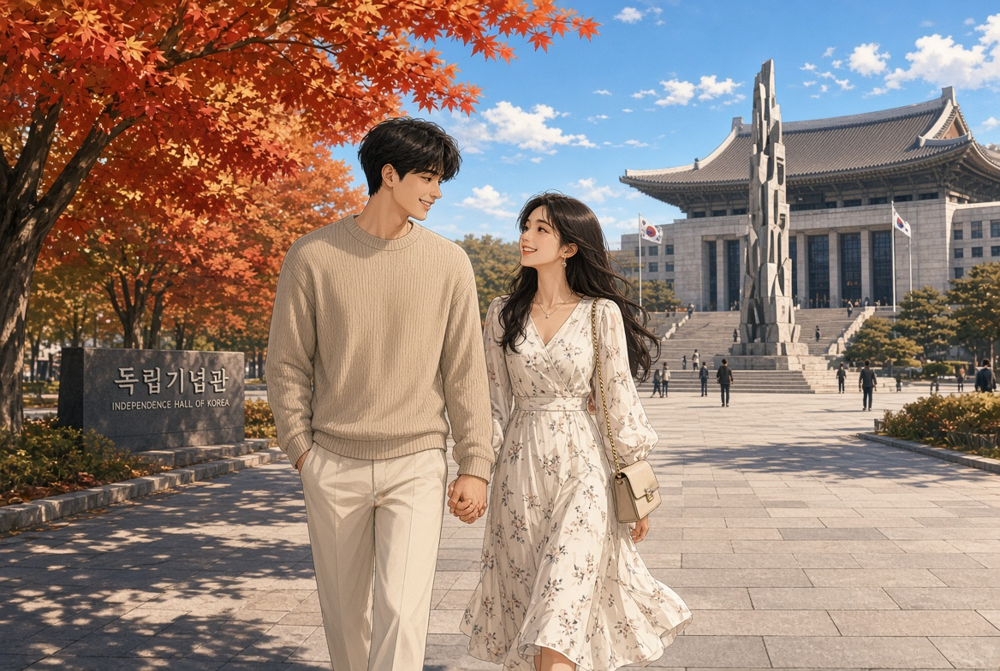
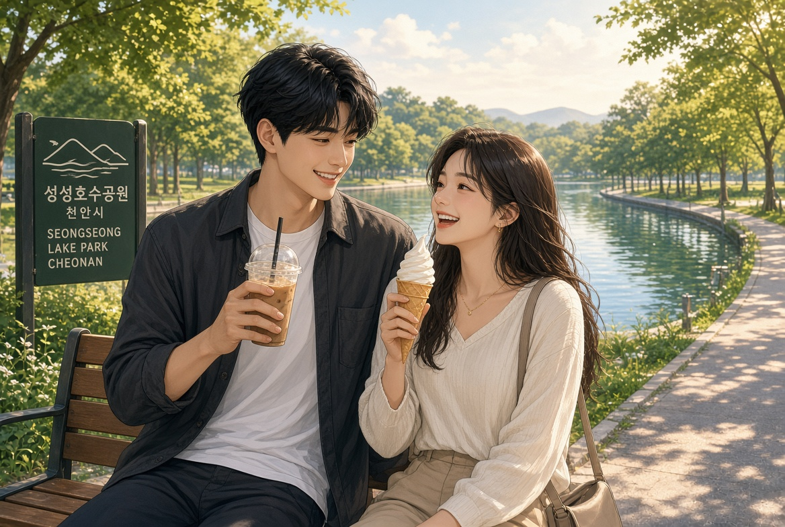
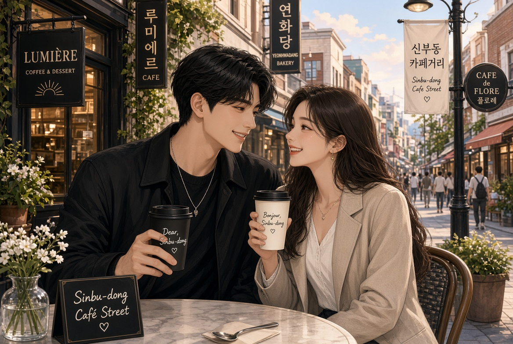

2026 천안시 청년정책 종합 추진계획
성장에서 정착까지, 청년 친화 생태계 구축
청년의 성장과 자립이 곧 천안시의 미래 경쟁력입니다
01 · 추진 배경 및 인구 구조
높은 청년 비중을 자산으로 삼되, 졸업 후 수도권 유출을 막는 정주 여건 조성이 시급합니다
청년 인구 비중
29.9%
18~39세 197,572명, 전국 기초지자체 최상위권
평균 연령
42.4세
전국 평균 45.7세보다 3.3세 젊은 도시
관내 대학
12개
학생 중 대학생 45.8%, 연 8만여 명 상주
핵심 과제
50.2%
이탈 청년 중 수도권 이동 비율, ‘거쳐 가는 도시’ 탈피 필요
천안형 청년정책 종합 추진계획
2
02 · 비전 및 4대 추진 전략
일회성 금전 지원을 넘어 청년 생애주기 전체를 아우르는 종합 지원 체계로 전환합니다
비전 · 청년이 행복한, 희망 가득 청년친화도시 천안
전략 1
RISE 연계, 지역 전략산업 맞춤형 인재 양성
전략 2
독립 청년 주거비 절감, 1인 가구 안전망 강화
전략 3
대학로 문화예술 활성화, 청년 커뮤니티 공간 확충
전략 4
청년 주도 정책 제안, 공공 거버넌스 활성화
천안형 청년정책 종합 추진계획
3
03 · 전략 1 교육·일자리
대학과 지역 산업을 RISE로 긴밀히 연결해 우수 인재의 지역 정착을 유도합니다
관내 12개 대학과 연계한 지역혁신중심 대학지원체계 가동
그린스타트업타운 활성화, 대학일자리플러스센터 운영, 스마트팜 지원
청년도전지원사업(참여 시 최대 350만 원 수당) 및 청년성장프로젝트 운영
‘청년의 품격옷장’ 면접정장 무료 대여(연 최대 3회)
천안형 청년정책 종합 추진계획
4
04 · 전략 2 주거·복지
주거 고정비를 줄이고, 1인 가구 비율이 높은 청년층의 삶의 질을 높입니다
무주택 독립 청년 대상 월 최대 20만 원, 최장 24개월(총 480만 원) 지원
전세자금 대출 이자 30~50% 지원, 공공임대주택 1,600호 이상 보급
전입 청년 ‘행복꾸러미’ 배부, 안심보안캠 설치 지원

천안형 청년정책 종합 추진계획
5
05 · 전략 3·4 공간·참여
청년 전용 소통 공간을 거점화하고, 청년이 직접 정책을 만드는 시정 주체로 세웁니다
대흥이음(원도심), 불당이음(신도심), 안서이음(대학가) 운영, 천안역 거점센터(본부) 추진
청년 5인 이상 팀의 지역 현안 해결 공모, 팀당 최대 1,000만 원 지원
유니브시티(Univcity) 페스티벌 개최, 청년정책 아이디어 공모전 운영

천안형 청년정책 종합 추진계획
6
06 · 재정 규모 및 단계별 로드맵
확실한 재정 투입과 체계적인 로드맵으로 정책의 지속가능성을 확보합니다
2026년 재정 투입
951억 원
청년정책 5대 분야 80개 사업
청년월세 상시 신청 전환, 면접정장 대여·1인 가구 지원 확대
RISE 연계 일자리 정착, 천안역 복합캠퍼스타운 내 청년 거점센터 개소
직산 도시개발 공공주택 3,800호 공급, 청년기금 200억 원 조성 완료
천안형 청년정책 종합 추진계획
7
07 · 기대효과 및 결론
청년 정주율을 높여 지방소멸 위기를 극복하고 도시 성장 동력을 완성합니다
주거·일자리 지원으로 수도권 이탈을 막고 대학 인재의 장기 정주 유도
지역 전략산업 연계 청년 일자리 창출, 스타트업 생태계 고도화
대학과 도시가 상생하는 유니브시티(Univcity) 청년 모범도시 확립